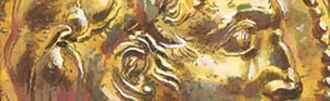

| Twelve Vultures | |
|---|---|
|  | |
| LOGO | |
| 类型 | 时间线延长 |
| 作者 | AKronblad |
| 版本 | (2017.03.11) for EUIV v1.12.2 |
| 论坛/贴吧 | Paradox forum thread |
| STEAM创意工坊 | none |
Welcome to Twelve Vultures and The Year 746 BC!
This is a world where great kingdoms will crumble to dust and small cities ascend to supremacy, where kings will turn into legend or enter into oblivion, and where heroes will climb thrones or lose empires. This is a world full of opportunities for those who make a grab at them, but also a world full of dangers for those who are overwhelmed by them. Can you shape your own future, or will you fall to those who can?
With over 3000 events and 100 decisions, almost 700 countries and cultures and more than 100 culture groups, over 40 religions, and more than 40 trade goods, Twelve Vultures offers a challenging and complex gaming experience, full of unexpected turns, twists, and surprises as well as historical accuracy.
What is Twelve Vultures all about?
Time period
Twelve Vultures covers the era from the years following the founding of Rome (746BC) to the fall of the Roman Empire in the west (476AD).
Bookmarks
Four bookmarks are set at different times during the time period. In addition, the A New Dawn bookmark can be played with all provinces inhabited already at start, through An Inhabited World.
April 30, 746 BC (year 30) - A New Dawn
The first Olympic Games, taking place three decades ago in around 776 BC, are marking the start of our calendar. Zhou imperial authority is reduced significantly in China after the sack of its capital three decades ago, and the emperor now holds only nominal power over the other states. Assyria is suffering from years of decay and disorder, losing its regional superpower status and allowing several conquered states to break free. But the new Assyrian king is ambitious, ruthless, and brave, ready for reconquest. Egypt is in a state of chaos, with separate Libyan dynasties ruling petty kingdoms independently, and with a powerful Kush in the south. And it is only a few years since the modest settlements of Roma and Carthago were established, two small cities destined to fight over supremacy of the western world in centuries to come.
April 30, 746 BC (year 30) - An Inhabited World
Play in a fully populated world with all playable province inhabited.(This is done through selecting the 'New Dawn' bookmark and in the 'A New Dawn or An Inhabited World' event go with the 'The inhabited world, please.' option.)
July 21, 340 BC (year 436) - Father and Son
An alliance of Greek cities under the leadership of Athens has declared war upon Macedon and its king Philip II. His son and heir apparent, Alexander, just turned 16 and appointed regent during King Philip's upcoming campaigns, eagerly awaitens to surpass his father in glory and fame. In the east lingers the Persian empire, always dangerous to the Greek freedom and always awaiting an opportunity to conquer Hellenic soil. But Persia is also fragile, with power struggles and intrigues at the court. Who will die first: the Great King Artaxerxes III of the Achaemenid dynasty or his long-serving but treacherous Hazarapati, the eunuch Bagoas? And what hopes are there for Athens to maintain its independence so fiercely fought for: will the new masters be Macedonians from the north or Persians from the east?
August 8, 323 BC (year 453) - Ghost on The Throne
Alexander the Great is dead, succumbing in the halls of Babylon. The chiliarch Perdiccas has secured power and has distributed satrapies and offices to Alexander's generals, himself assuming the regent role of the two kings, Philip III and Alexander's infant son, Alexander IV. Thus, the Macedonian empire is temporarily united, but its satraps and generals are not content on being junior to one of their own. In the west, powerful Carthage is eyeing the development, unaware of the rising star of Rome, the future cause of its defeat and complete annihilation. In the east, the rising but not yet existing power of Maurya is destined to disrupt Macedonian hegemony in India.
August 19, 14 AD (year 790) - City of Marble
Augustus, the saviour of Rome and the founder of the Principate, has died, leaving his adopted son Tiberius a reluctant successor and Princeps. By the end of Augustus' reign the Roman frontier had been advanced to the Danube and the Rhine and Roman provinces encircled the Mediterranean. Any gaps were filled in by client kingdoms, insulating the empire against threats, such as from Parthia to the east. And in the far east, the once mighty Han dynasty that until a few years ago ruled all of China and beyond, has lost power to a usurping dynasty. How long will these three empires last and which one, if any, will prevail, given internal as well as foreign challenges and rivalries?
Features
- * Sandbox mode with the option to have the whole playable map populated (An Inhabited World)
- * Dynamically appearing countries over time as other countries expand into uninhabited lands
- * Greek and Phoenician colonies appearing over time
- * Provincial and regional administration
- * Second Imperial Capitals or Additional Central Courts
- * Court officials for several different countries
- * Social classes for several different countries
- * Domestic policies
- * Military doctrine
- * Reworked buildings
- * Many additional idea groups and national ideas
- * Tribal tribute and recruitment
- * Local recruitment
- * Trading posts: trade in non-colonised and tribal lands, potentially establishing colonies
- * Vassal troops: request soldiers from your subjects
- * Senatus Consultum: obey the decrees of the Senate and reap the rewards, or disregard them at your own risk.
- * Great wonders: build your own monuments that will stand the test of time and earn you immense respect
- * Resource requirements: secure sufficient supplies of the needed trade goods
- * Dynamic changes to prices of trade goods, based on demand and supply
- * Pirates
- * Chinese tributary system
- * Slave revolt mechanics
- * Call for freedom mechanics with focus on separatist rebels and more widespread and sudden revolts
- * Balance between social classes, primarily for smaller nations
- * Socii: interact with allies
- * Civitas: grant the provincial non-citizen Peregrini partial (Ius Latii) or full (Civitas Romana) citizenship, or deny them, all in order to create the most beneficial balance between the three.
- * Koinon: Greek leagues
- * Provincial focus of tribes
- * Provincial specialisation for non-tribals
- * Roman achievements: try to achieve what the Romans did historically, with 36 challenging quests.
- * Alexander the Great and Hellenistic successor states
- * Inventions: feature capturing historically very important innovations, inventions, and discoveries, such as the saddle, chainmail, steel, catapults, etc.
- * Cultural Standing mechanism
- * Simple Greek Hegemony mechanism
- * Syncretism: Elements of foreign faiths in state religions
Credits and thanks
- satyrlord: for building icons and 'Greek shield' banners.
- dharper: for religious idea groups and for Hindu events.
- jacobsighs: for the super flat map.
- jnt.mullen: for the Tenth Idea mod.
- ciadude2: for the tracks from his standalone music mod.
- in heaven: for the thick borders and the font.
- cldcrst: for the Roman province and city names.
- M&T Team: for many of the ruler traits.
- DerGroseKA: for the shields of the units.
Explanations to some important concepts and mechanics
Since the explanations are quite lengthy and detailed, they can be found in the Paradox forum and the Twelve Vultures thread, in the second post. It covers the following concepts and mechanics in much more detail:
- Assimilation and acceptance of cultures
- Trading posts
- Vassal annexation
- Administrative control of provinces
- Resource requirement and availability
- Provincial development
- Ruler's favour
- Buildings
- Great wonders
- All different Costs of administering...
- The Olympic Games
- Pirates
- Chinese tributary system
- Call for freedom
- Unruly slaves
- Balance between classes
- Stratagems
- Civitas Romana
- Res Gestae (Roman achievements)
- Cultural standing
- Descriptions to the different foci
- Spread of religions in and between provinces
- Spread of cultures between provinces